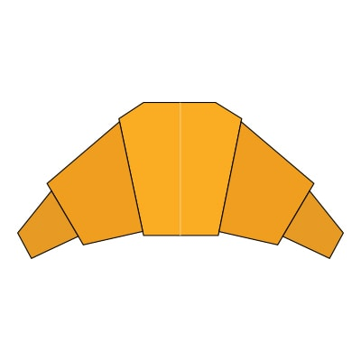

Banana
- Bananas float in water because they are less dense in comparison.
- The banana is actually classified as a berry.
- Bananas grow on plants that are officially considered an herb.

Cabbage
- Cabbage has been cultivated for longer than almost any other vegetable on record.
- In ancient China (roughly 1000 B.C.) scrolls touted cabbage as a magic cure-all for bald men.
- Eating cruciferous veggies like cabbage has been scientifically provento lower your risk of developing cancer.

Carrot
- People first grew carrots as medicine, not food, for a variety of ailments.
- Carrots can be traced back about 5,000 years through historical documents and paintings.
- A medium-size carrot has 25 calories, 6 grams of carbs, and 2 grams of fiber.

Croissant
- The original croissant was called Kipfel and originated in Austria in 1683.
- August Zang, an Austrian artillery officer, is credited with bringing the croissant to France when he opened his own Viennese bakery in Paris.
- The Croissant became the French national product in 1920.

Cupcake
- The first mention of a cupcake was in 1796.
- used to be baked in teacups and coffee mugs.
- Many early cupcakes were flavored with spices and dried fruits.

Ice cream cone
- The US military built the first floating ice cream parlor for sailors in the Pacific during WWII.
- Research shows that ice cream makes people feel safe and comfortable.
- China holds the record for the most ice cream eaten in 2016.

Orange
- The US military built the first floating ice cream parlor for sailors in the Pacific during WWII.
- Research shows that ice cream makes people feel safe and comfortable.
- China holds the record for the most ice cream eaten in 2016.

Popsicle
- The ice pop was introduced to the public at an Oakland ball for firemen in 1922.
- The Popsicle company claims that its annual sales are over two billion and that its best-selling flavor is cherry.
- May 27th is National Grape Popsicle Day.

Turnip
- The turnip or white turnip is a root vegetable.
- is commonly grown in temperate climates worldwide for its white, fleshy taproot.
- There are over 30 varieties of turnips which differ in size, color, flavor and usage. Purple-top turnips are the most common type.

Watermelon-slice
- You can eat the whole watermelon.
- August 3 is National Watermelon Day, and throughout summer.
- They’re 92 percent water, making them a perfect refresher for those hot summer months.